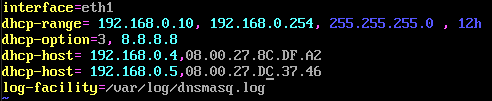
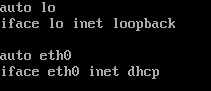
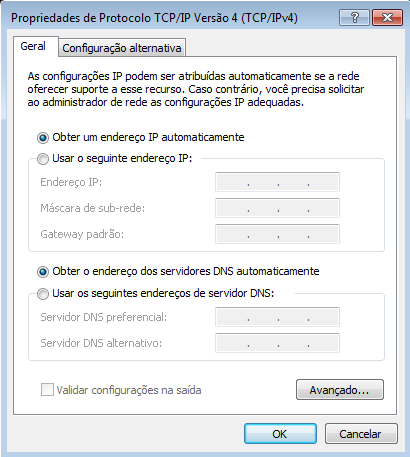
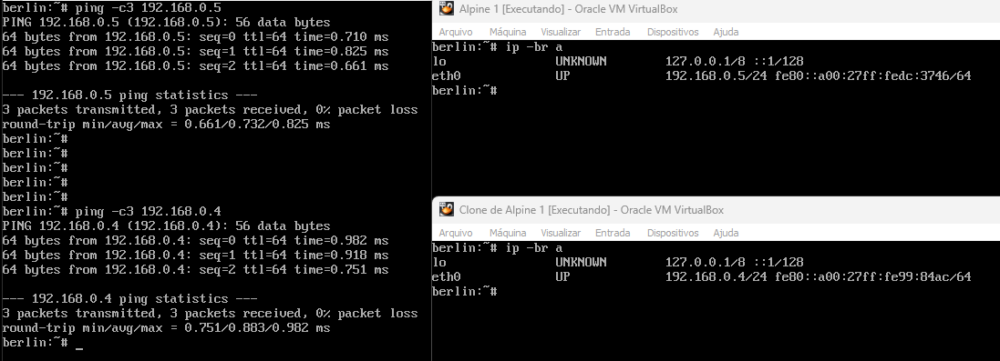

DHCP
Instalação
- dnsmasq
Configuração
1º - Arquivo de configuração do dnsmasq é:
/etc/dnsmasq.conf
mas, vamos criar um arquivo (exemplo.conf) no diretório (dnsmasq.d)
/etc/dnsmasq.d/exemplo.conf
todas as configurações no arquivo(exemplo.conf) vai migra para dnsmasq.conf.
2º - Editando o arquivo exemple.conf a configuração padrão é essa:
-
Define a interface de rede que vai ser dhcp
EX: interface= eht1 -
Define a faixa de ip (inicial , ip final , mascara de rede , tempo que o dispositivo fica com o ip)
EX: dhcp-range= 192.168.0.10, 192.168.0.254 , 255.255.255.0 , 12h -
Define um dns
EX: dhcp-option= 3 , 192.168.0.1 (3: Identifica o servidor DNS) -
Define outro dns (Opicional)
EX: dhcp-option= 6 , 8.8.8.8 (6: Identifica o servidor DNS) -
Define um domínio (Opicional)
EX: dhcp-option= 15, nome-domínio (15: Especifica um domínio se caso você esteja em um) -
Informa onde será o log do serviço
EX: log-facility= /var/log/dnsmasq.log -
Informa os IPs fixos
EX:dhcp-host= Ip-da-máquina, Mac-da-máquina
Arquivo de configuração do dnsmasq

Esse será o modo de configura no linux (alpine)
Caminho: /etc/network/interface

É esse no windows

Teste
